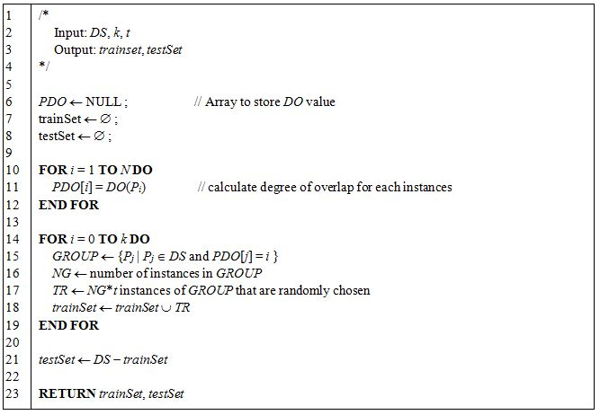

[ Balanced Train/Test set sampling ]
1. introduction
In machine learning, classification is the technique of identifying to which categories or classes a new observation belongs, based on a training set. The performance of a classification model is generally measured by classification accuracy of a test set. The first step of developing a classification model is to divide the obtained whole dataset into training and test sets by random sampling. In general, random sampling does not guarantee that test accuracy reflects performance of a developed classification model. If random sampling makes biased training/test sets, classification model may produce biased accuracy. In this study, we show the problems of random sampling, and propose balanced sampling as an alternative to random sampling. We also propose a measure for evaluating sampling methods. We perform empirical experiments to verify our sampling algorithm produces proper training/test sets using benchmark datasets. The results confirm that our method leads to better training/test sets than random sampling and several non-random sampling methods.
2. Download
- Source code of balanced sampling : balancedSampling.R
- Test code of balanced sampling : test.R
- Sample dataset : dataset
3. Basic Usage
- Install R software.
- Run R software.
- Run test code in R console.
※We assume all downloaded files are in 'c:\works' folder.
4. citation request
[Author], Balanced Training/Test Set Sampling for Proper Evaluation of Classification Models, [institution], [page]